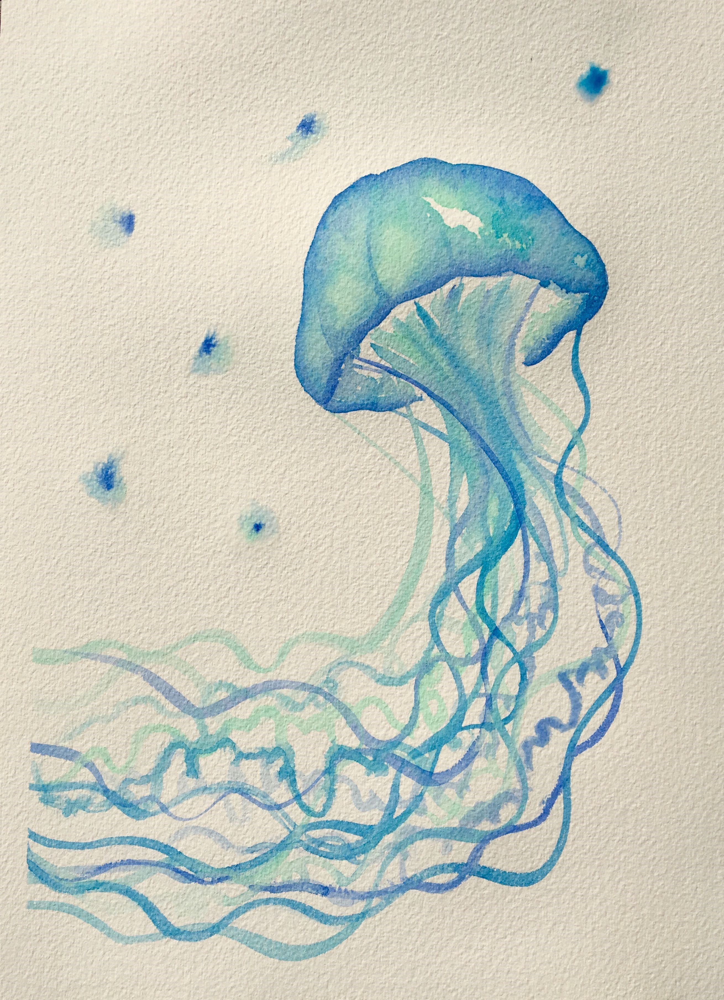

This year I finally found a healthy group of friends who love and support me, even on my hardest days, and are by my side unconditionally. Outside of school, we all enjoy spending time together.
This year as a coping mechanism, I got really into art. Through watercolor paintings especially, I found an outlet for my complicated emotions.